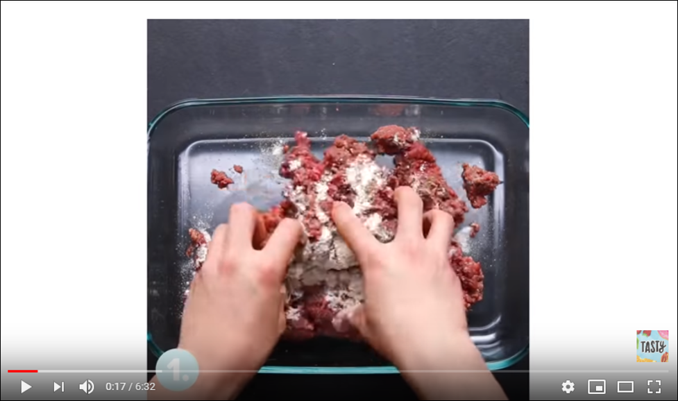
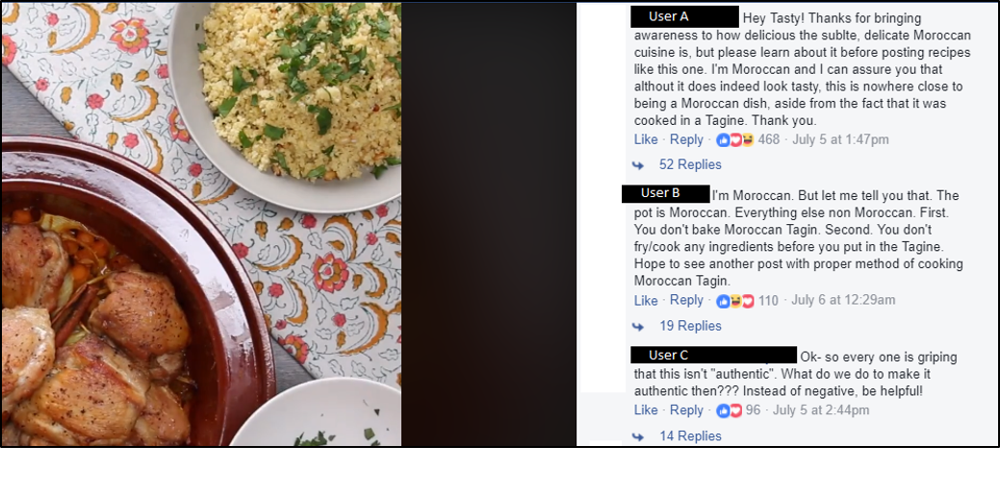
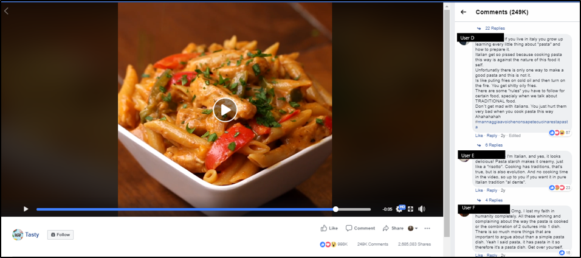

How to (News)feed a Crowd: Transformation and Collaboration in Digital Food Communities
Kelli R. Gill
Texas Christian University
(Published February xx, 2020)
Introduction
In his essay “Citizenship, Rhetoric, and Pedagogy,” Gerard A. Hauser discusses the need for individuals to interact face-to-face with strangers in order to establish trust. He argues that these types of relationships are in decline because of the disappearance of structures of secondary associations like churches or volunteer groups (132-133). He contends that while digital communities may be powerful and allow for widespread networking, they are no substitute for face-to-face contact. Instead of interaction among individuals of difference, he argues, online spaces tend to create collections of only like-minded people. This phenomenon is known as the “echo chamber” (Colleoni et al 319). The risk of echo chambers is not just that online spaces, especially social media, create enclosed communities with similar viewpoints, but that these polarized communities lead to radical opinions (Warner 431) and conflict (Hahn et al. 70). While it’s fair to say that social media can create echo chambers, this criticism is most often in regard to political content (Dubois and Blank, Colleoni et al., Karlsen et al.). Indeed, most work on the polarization of online communities has been focused on political discussions of fake news (Ross and Rivers, Farkas et al., Skinnell), political discourse on social media (Pond and Lewis, Brundidge), and protests (Rice, Olson, Tufekci and Wilson, Bastos et al). While this work has become increasingly significant since the US 2016 election, it’s important to ask whether polarization and radicalization are rampant across the internet or just around certain content and communities. To return to Hauser’s essay, can the internet act as a structure of secondary associations? If so, what potential digital content creates opportunities for this interaction?
We, scholars of digital rhetoric, should turn our attention to the circulation of seemingly neutral digital artifacts. One study by the Pew Research Center found that polarized crowds are often formed around political content, but that other topics (hashtags) such as hobbies or brands, reveal less polarized communities (Smith et al., “Mapping Twitter Topic Networks”). There’s great potential for individuals to encounter difference and interact with strangers around less divisive content. Hauser argues that individuals establish trust among strangers in bowling alleys or churches—not political rallies. The space and medium plays a huge part in the way individuals interact. This is not to argue that we should turn away from content which is political (thus divisive), but rather that we should not assume that meaningful rhetorical action can only occur around “serious” content. Similarly, if we want to consider the ways that the internet can act as a structure of secondary associations, we should consider looking at content which reflects other types of interactions and components of identity.
Individual identity is composed of far more than political affiliation and users make meaning through digital content of all types.1 Within this article, I will build upon previous research in digital communities and participatory culture (Arroyo; Reid; Hodgson; Jenkins; Papacharissi) and the call for rhetoric and composition scholars to look to mundane, everyday writing practices (DeLuca; Gogan; Rivers and Weber; Weisser; Bacha) to explore how strangers connect with one another through digital recipes. Digital recipes offer content which appears neutral to users (thus less likely to create polarizing political responses) but creates opportunity for connection and trust. Through analysis of user interaction in the comment sections of digital recipes, this article demonstrates the potential of social media to act as a structure of secondary associations.
Communities/Comments of Digital Recipes
To narrow the focus of this article, I will be looking at digital recipes created by Tasty, a prevalent food blog. I’ve chosen to look at Tasty because they have popularized a very unique style of digital recipes which are video only and utilize what Katharina Rein and Tommaso Venturini call a “social-only content dissemination strategy” (3369). Companies like Tasty use social media sites for their content distribution in order to take advantage of Facebook algorithms which prioritize videos uploaded directly to the platform in user’s newsfeeds over other content like photos, links, or texts (Tandoc and Maitra 1680). When I first began this project in 2016, Tasty’s Facebook page had around seventy-six million likes; as I’m writing this today (2020) they have over ninety-seven million. One study which analyzed one-hundred million Facebook videos found that food videos had the most engagement from users, with Tasty being noted as one of the most popular pages (Rayson). The high interaction on these videos (with many garnering thousands of comments and likes and million plus shares) make them a rich site for research. The widespread reach of these videos also increases the potential for millions of users to come into contact with each other through the comment section. Comment threads in particular demonstrate how users interact with each other around a single video, rather than as two polarized groups. By examining the language used within comments, we can see how individuals encounter difference. Within this article I will be doing some close readings of user comments in order to talk about the ways digital recipes open dialogue about identity, ownership, and authenticity.
Facebook comments matter, not just to users but to rhetoricians. Whereas comment sections within online newspapers (generally political content) have been widely researched (Canter, Coe et al., Hughey et al., Morlandsto & Mathisen, Rosenberry, Ruiz et al., Santana, Urper et al.), less analysis has been done on the comment sections of social media content. Comments deserve further attention from a rhetorical perspective because of the ways they demonstrate user composing and communication practices. As John R. Gallagher notes, “Investigating online comments can deepen our understanding of the way audience interactivity emphasizes production and distribution as overlapping and intersecting processes” (34). Comments challenge what it means to create and consume by opening digital content to potentially unintended rhetorical action. While recipes might traditionally be assumed to be instructional and lead to cooking or eating—a digital recipe has the potential to reach multitudes of unintended audiences which can provide context and challenges to the video through commenting. By providing close readings of different comment threads, I hope to demonstrate the ways that users form communities through video consumption.
Food as Communication
Roland Barthes argued that food acts as “a system of communication, a body of images, a protocol of usages, situations, and behavior” (29). Food is social and cultural; as a system of communication, food is simultaneously being shaped by the environment and group of people it is made by and shaping the values and behaviors of that society. As an important meaning-making practice, food enables us to communicate our values 2 while also stimulating conversations while eating and cooking. Studying food and other common objects from a rhetorical perspective allows us to define an object’s value outside of its physical function. Just as food is more than mere fuel for the body, food videos are more than just cooking or just instruction.
The popularity of digital recipes like Tasty indicates the rhetorical function of food, because it solicits consumption of content in addition to consumption of the food itself. Patrizia Calefato argues that, “Our fascination with food is specific to postmodern society and can be seen through our devotion to food media, trends, and movements. Everyone, everywhere, all the time is constantly talking about food, eating food, or making food” (371). The rise of the internet has also led to a rise in recipe sharing, cooking videos, and food photography. The practice of taking pictures of our meals and sharing them online demonstrates how much food is tied to communication—to the extent that mere pictures of our food are supposed to communicate something about us, in a way that text alone cannot. Additionally, the visual composition of the food image becomes just as important as the physical composition of the food itself.
Our fascination with food is entangled with technology, and digital recipes demonstrate one way in which food acts as a form of communication. As sociologist Alice P. Julier points out, “meals provide a landscape from which to explore all manners of cultural and economic dilemmas. Decisions about whom to eat with, in what manner, and what kinds of food are inextricably tied to social boundaries” (2). What might appear to be a simple action such as deciding on what to eat for dinner is a negotiation between social values, cultural identities, health choices, and material access. Digital recipes extend those negotiations further by placing them in public, social spaces. Food choices are no longer just about what to cook or eat, but also about what food content a user consumes and engages with. As noted previously, the digital content highly influences the type of conversations which take place around and about it. An online video isn’t just a recipe or just moving images, but rather it tells stories. When these stories align or misalign with the “protocol of usages, situations, and behavior,” or break “social boundaries” users are quick to respond and debate with one another (which I’ll demonstrate in the close readings below). The digital recipe is categorized not just by its content but by the perception and understanding of the user. Just as Julier points out that meals are a site in which scholars can explore social and culture issues, so too do digital recipes offer a landscape in which we can understand the material and immaterial user consumption.
Online Counterparts: Assessing Digital Artifacts
When a traditional recipe (such as those found in cookbooks) transitions to a digital platform, it can take on different forms. Though the recipe may contain the same instructions as a previous, text-only version, the content creator utilizes technology to communicate with his or her audience. Elizabeth Fleitz explains that, “Modifications, deletions, substitutions and experiments enable the cook to reproduce the text in her own way. Digital versions of the traditional recipe take advantage of its dynamic nature, enhancing the recipe with hyperlinks, photos, videos, and user comments” (“Cooking Codes”). Digital recipes from Tasty demonstrate this transition drastically.
Whereas text-based recipes often offer specific instructions such as methods (cut, whip, beat, fry), quantities, and notations, Tasty’s digital recipes utilize very little text and no verbal instructions. Users are forced to direct their attention to actions within the video to model the recipe, rather than reading over a text for clarification. Tasty even changes the genre of a food video (Basu). While most food videography features a cook providing instruction or commentary, Tasty videos are faceless and feature only aerial shots of hands and food3 as shown in Figure 1 below.

Figure 1. Text.
Visually this style not only removes the author (thus rhetorically eliminating the traditional authority of a chef or celebrity cook) but also creates a first-person perspective, causing the user to imagine they are the ones preparing the dish. Whereas a traditional recipe writes to a reader with an aim for them to cook (either in an attempt to persuade a reader to make the dish or under the assumption they are already in the act), a Tasty recipe invites the user to act as a participant in the process. This method is drastically different than more traditional videos like those presented on cooking channels or food vlogs. Whereas most forms of food media often utilize the face or voice of a cook to invite viewers into their kitchen spaces like a close friend (consider the popularity of cooking shows like The Pioneer Woman or The Barefoot Contessa which take place in the chef’s homes often showing the host’s family or intimate domestic tasks like setting the table or walking through their pantry), Tasty makes no effort to create an environment in which the user feels like a guest. Rather the video has users take on the role of cook themselves, in many ways implying that they are making the dish at that very moment. The participatory nature of Tasty videos as well as the communicative properties of food makes Tasty videos inviting for users to take ownership of such recipes. Success for a traditional recipe may mean that a reader cooks the dish, but for digital recipes the goal may not be to cook at all. Digital recipes challenge our understanding of materiality by changing what it means to consume.
Redefining Consumption
Recognizing the rhetorical function of digital recipes requires that we redefine consumption as a digital practice, Anna Lavis suggests that we must
go beyond a paradigm of eating only as something that happens in encounters with the materiality of mouths and stomachs; rather, it takes place in, and assembles together, brains, eyes and computer screens. Such remapped vectors of a dematerialized digestive system demonstrate eating food porn to be simultaneously disembodied and yet embodied. (4)
Lavis’s discussion of food porn applies well to the digital recipe, as it reframes consumption as complicated, disembodied, and embodied. Rather than reducing digital food artifacts to an either/or scenario (either it functions the same as material food or it is not valuable), Lavis resists online/offline binaries and emphasizes the networked encounters between bodies, computer screens, and food media. Digital recipes or “food porn” motivate users to act through consumption of the media itself. The recipes create opportunities for different responses. While the concept of digital consumption could be construed as simply “watching a video,” this reduction ignores the potential for embodied processes such as becoming hungry, salivating, feeling desire, deciding to cook, or eating. Additionally, these embodied responses can also overlap with immaterial responses such as imagining, changes in perspective, recall of memories, thoughts of the future, or even emotional responses such as anger or joy. The invitation to look, imagine, and interact with content can be defined as rhetorical action. Falling back on user engagement as watching only ignores the participatory nature of the video—the “interactivity” of the user which “emphasizes production and distribution” (Gallagher 34). It is the multitude of potential interpretations and responses that creates the potential for digital recipes to bring about interactions among strangers.
The study of these interactions allows us to see not just the persuasion of the video to “take action” but also what James P. Zappen calls, “self-expression for the purpose of exploring individual and group identities” (322). As a system of communication, food becomes a way in which individuals can explore social and cultural issues together. By challenging the authenticity or methods of a recipe they are not just critiquing a video, but are also arguing “This dish belongs to me… my family… my culture.” This form of self-expression demonstrates how food acts as a “protocol of usages, situations, and behavior” (Barthes 29). While food appears neutral, the close readings in the following passages will demonstrate the nuanced, powerful ways which users express themselves through food. Further, these discussions show how commenting on digital recipes allows users to encounter difference in a productive way.
Identification through Food
Simona Stano, in “Lost in Translation: Food, Identity, and Otherness,” argues that we must “…investigate the links existing between the signs, texts, discourses, and practices concerning the food universe, on the one hand, and the processes of construction and the forms of expression of sociocultural identity—or, better, identities—on the other hand” (82). This investigation requires that we begin truly looking at digital recipes, not just as another food media but as a new food practice of identification. The formation of food identities draws on both physical practices and immaterial processes. An investigation of the links between these practices shows that digital food artifacts are interpreted by and recirculated through a user’s culture. The interaction among users in digital food communities can demonstrate the ways users take up and negotiate identities through food. An example of the way that digital food artifacts are interpreted by and recirculated through a user’s culture is seen in the comment sections of digital recipes.4 In a Tasty recipe for Chicken Tagine, a traditional Moroccan dish—many users display cultural expressions of identification when commenting on the recipe shown in Figure 2.
Though the video does reference Morocco it does not claim the dish as authentically Moroccan. Both User A and User B identify themselves as Moroccan and begin to question the authenticity of the recipe. By framing the recipe in terms of the interaction among users rather than the content itself—we can see how the dish functions as a representation of Moroccan identity and a display of textual authority.

Figure 2. Chicken Tagine. User names are public, but have been blocked here for privacy.
User A states, “Thanks for bringing awareness to how delicious the subtle, delicate Moroccan cuisine is, but please learn about it before posting recipes like this one.” User A’s attention to awareness recognizes that Moroccan cuisine is not adequately represented in cooking literature (as the act of bringing awareness would not be necessary in a widely recognized, dominant dish). Second though, is User A’s request that the video producers “learn” about the culture before posting recipes. User A’s statements create a digital story that references a history of lack of representation and misinterpretation. Nick Couldry explains that, “digital storytelling in principle represents a correction of those latter hidden injuries since it provides the means to distribute more widely the capacity to tell important stories about oneself – to represent oneself as a social, and therefore potentially political, agent – in a way that is registered in the public domain” (386). Here, User A is both recognizing and correcting a cultural injury by representing Moroccan culture and reclaiming the dish.5 User A’s claims demonstrate the way food is defined through cultural context. User A claims authority over the dish by identifying it as part of Moroccan culture, then publicly calls Tasty out for appropriating a food before understanding its history. According to User A, the dish cannot be called Moroccan because the content creator is not demonstrating knowledge or understanding of Moroccan cooking. Eating becomes seen as “not simply a natural act” but as “culturally constructed” (De Solier 16). De Solier’s claim that food is culturally constructed fits with Barthes’s understanding of food as a system of communication—one which is situated culturally and must be performed according to a set of protocols.
User B also identifies themselves as Moroccan but draws attention to method as an indicator of authenticity. User B states, “First. You don’t bake Moroccan Tagin. Second. You don’t fry/cook any ingredients before you put in the Tagine. Hope to see another post with proper method of cooking Moroccan Tagin.” User B recognizes the practice of physical cooking methods as tied to cultural practices. Stano argues that food “concerns all the various activities, discourses, and images that surround and are associated with it, therefore becoming a form of expression of cultural identity” (96). User B is establishing that this particular food is associated with certain methods and practices—these associations determine its authenticity, not the name or ingredients alone. User B assumes that the dish should be authentic, and that to be authentic it must follow certain methods. User B engages with the video content but does not agree with it and references personal experience and cultural knowledge to discredit the content. Lastly, User B calls for future videos to be made with proper methods. User B is asking for a revision to be made.
User C has been included as a demonstration of how food media might induce rhetorical action other than identification. User C states, “so every one is griping that this isn’t ‘authentic.’ What do we do to make it authentic then?” User C is calling on individuals who have displayed authority over the recipe to revise the recipe. Unlike User B, User C is not commenting to Tasty but rather commenting to the other users interacting with the content. All three users display what Linh Dich refers to as “community imaginary.” Dich argues that, “To be able to express a racialized identity and experience, writers may need to be part of and imagine multiple spaces and audiences. After all, race is not just a public or private event, but something that traverses theoretical boundaries” (Dich 94). The writers here are not just the video producers but also the commenters themselves who are calling out to multiple imagined audiences.
User A and B demonstrate the imagining of non-Moroccan audiences when they explain the requirements of authentic Moroccan cuisines. Phrases such as “I can assure you” (User A) and “let me tell you that” (User B) attempt to persuade and defend Moroccan cuisine to potential non-Moroccan audiences. Both users reference a “you” and “I,” without clarity as to who they are referring to. As spectators we could assume that the “you” is referencing the content creators (Tasty), but the “you” also seems to be referencing any readers who might stumble upon their comments. The users could be writing for both the public “you” and the potential private “you.” I say, “could be” because we essentially do not know in what context these posts were written. As Jackson and Wallin point out, “It is difficult to determine what kind of ‘public’ emerges from the casual exchanges of total strangers” (391). The contexts and motives of user composing is unknown to audiences, but interactions still display the spontaneous community formation that can occur between social media users.
Sharing Meals
Tracing the interactions within this comment thread demonstrate the multiple ways that users consume a digital recipe. Users not only are able to share content and share meals, but to share knowledge. User C’s comments point to a motivation to not only cook Tagine, but to understand how to make it authentically. User C demonstrates a complication to the claim that digital food content is only meant to be watched. Instead, User C’s potential consumption is shaped by the interactions among other users. Regardless of what the video is “meant” to do, the ecological function of the digital community creates potentials for users to react in a myriad of ways. Spontaneous food communities are unique to digital platforms, as Couldry explains that,
People who have never done so before are telling personal stories through digital forms, storing and exchanging those stories in sites and networks that would not exist without the world wide web and which, because of the remediation capacity of digital media, have multiple possibilities for transmission, retransmission and transformation available to them.” (374)
Spaces such as Facebook create opportunities for digital storytelling that traditional food literature did not. Dich argues that these opportunities are especially important for “groups that have been historically excluded from public spheres and denied the tools and resources for constructing themselves as public figures” (100). Cooking spaces located on social media, such as Facebook, have the potential to open food discourses to audiences who previously have been excluded. Digital recipes posted on Facebook act as a “digital public discourse space,” by providing opportunities for minority voices to be inserted into mainstream media (Duthely 203).
Breaking the Echo Chamber and Other Potentials
Users A, B, C, and others not shown (this specific video garnered over two-thousand comments) all form a spontaneous digital food community around a single digital recipe. Ken Gillam and Shannon R. Wooden explain that, “communities function ecologically: interconnected and collaborative, they are shaped by myriad factors besides the public utterances of the participants. Each participant is also an ever-evolving product of numerous contributing forces, conscious and chosen or invisible and involuntary” (28). By understanding how comment threads function ecologically, we can recognize the forces which shape communities around digital recipes. On social media, a major contributing force are the algorithms which filter Facebook comment displays. Simply commenting on a video does not result in a community formation—this would lead to the same results as the polarized communities (lots of people talking, but not to each other). Additionally, though, it increases the likelihood that a comment will become buried or hidden by Facebook. Interaction among comments (likes and replies) increase the likelihood that comments will be displayed at the top of videos. This system rewards those who not only engage with the video but engage with each other.
In addition to opening up space for audiences who had previously been barred from conversations about cooking, digital recipes offer us with one potential response to social media echo chambers. The creation of a spontaneous community also points us to interactions among strangers in different social groups, different places, and often with different ethnicities. Even when users share cultural identities they do not always agree. Take for example the user comments in the Tasty video “One-Pot Chicken Fajita Pasta” shown in Figure 3 below.

Figure 3. One-Pot Chicken Fajita Pasta, user names have been marked out for privacy.
Within the comment section of this video we see again two users who claim cultural authority over the food (pasta) by identifying it as part of Italian culture. The difference between Users D and E and Users A and B, however, is that these two users disagree on what determines authenticity.
Interestingly, User D does not claim to be Italian, but instead recognizes that food is tied to physical places. User D states, “If you live in italy you grow up learning every little thing about "pasta" and how to prepare it. Italian get so pissed because cooking pasta this way is against the nature of this food it self.” User D points to authenticity determined through experience and geography, implying that knowledge about pasta is not just in eating it, but also in other cultural experiences which are lived. To know about pasta and learn to prepare it properly, one must not just be Italian, but have grown up in Italy. While User D points towards one aspect of authenticity, the user does not claim to be Italian. Though we can assume from the comment that the user has either lived in Italy or knows people who do, they do not explain this in their comment. Rather, the user argues that cooking pasta according to the video’s instructions makes Italians “pissed” and that other users should not lash out at Italians because they are being hurt by the instruction. User D’s statement appear to be in response to other user comments which are criticizing Italians for being mad about the video.
Similar to the users in the first digital recipe, User D leaves open potentials for who the “you” is. The “you” could be referencing themselves or the users. Also notable is that User D does not reference an “I” but instead references Italians in the third person. So, while User D does not claim authority by using personal identification as an Italian, they do recognize that Italians are the ones who determine the authenticity of the dish. User D’s comments demonstrate Gillam and Wooden’s claim that communities function ecologically. User D’s comments are shaped by many overlapping relationships between Italians, geographic places, and other users in the comment section.
In contrast, User E does claim to be Italian and uses this to offer a contrasting view to User D. User E begins their comment in the exact same way as User B did in the previous video by stating, “I’m Italian.” The difference, however, is that User E uses their identity to qualify a statement in defense of the recipe. In addition to calling the recipe “delicious,” User E points out other Italian dishes in comparison to the dish, stating, “Pasta starch makes it creamy, just like a "risotto". Cooking has traditions, that's true, but is also evolution.” Whereas User D points to place as an indicator of authenticity, User E utilizes an association with another Italian dish, “risotto,” to defend the digital recipe. User E’s statement reflects a belief that group identity (and culture) can change over time, and just because a dish may not be “traditional,” it does not discredit it from being “authentic.” Most interesting in User E’s statement, however, is the final sentence which states, “And no cooking time in the video, so up to you if you want it in pure Italian tradition ‘al dente.’” Here User E demonstrates the rhetorical power of a digital recipe like Tasty which lacks detailed instructions. Rather than stating times, User E points out that the recipe leaves the cook time up to the viewer to decide if they want the dish to be “pure Italian tradition.” Once again, User E demonstrates authority by referencing Italian cooking (“al dente”) but also extends agency to users to choose how they want to cook the dish. Both User D and E participate in a dialogue about Italian culture while also recognizing the rhetorical potential for users to take action and cook the dish themselves.
Similar to the former recipe, here I have chosen to contrast these two users with another user who does not use their identity to make claims. User F within this comment section represents a frequent type of commenter on digital recipes—the frustrated reader. Rather than being frustrated with the video, User F points to the other users who are “whining and complaining” over the “combination of 2 cultures into 1 dish.” User F’s comment not only calls out directly to the other users in the comment section but also recognizes the cultural significance of the dish. User F recognizes that foods belong to different cultures while simultaneously dismissing user concerns about authenticity by ending their comment with “get over yourself.” What this comment demonstrates is that even if the food is framed culturally and users claim authority over a dish through identity, there will still be users who dismiss the concerns. I include this user to demonstrate that appeals to authority or cultural ownership are not always effective. Though the content of many digital recipes appears neutral, the comment sections demonstrate a tense negotiation between users—some optimistic and others pessimistic, but all demonstrating a spontaneous community. Within the comment section of many videos like this one, strangers on the internet are negotiating issues of identity, authenticity, and ownership together. While these conversations are not always civil, the interactions between Users A, B, and C and D, E, and F point towards a potential for learning from individuals they might never have crossed paths with otherwise.
Conclusion: Can Social Media Serve as a Structure of Secondary Association?
To return to Hauser’s concern that online spaces are an inadequate structure of secondary association because of the proliferation of echo chambers, I’d like to point towards the rhetorical impact of digital recipes as an artifact which results in spontaneous community formation. While Hauser points towards spaces like churches as an ideal structure for face-to-face interaction with strangers, spontaneous communities develop quite differently. Rather than being organized around a shared value (like religion or a unified cause), digital recipes bring into contact a much broader audience of strangers for a much briefer moment of contact. While this article certainly points towards appeals of Tasty, in no way does the data reflect why individuals choose to comment. What we do know, however, is that the videos do result in one very clear action—a comment. While Hauser contends that online spaces will never satisfy the face-to-face contact that structures of secondary associations achieve, I argue that what social media does create is an opportunity for people from various communities to interact with others across the world. Unlike churches, or in Robert Putnam’s example, bowling leagues—comment sections are not geographically bound. This point is important to note, because while churches and bowling leagues can certainly operate as spaces of difference (and I am in no way in disagreement with this potential), they are also at risk of becoming echo chambers as well.
As geographically bound, these social clubs and organizations are shaped by their own selection factors such as city, population, upbringing, age, gender, and class. These factors point to one limitation of local structures. I do not argue that social media sites or digital recipes aren’t susceptible to that risk as well. However, I believe that the comments discussed here demonstrate a spontaneous space which looks vastly different than the conversation that “once strangers, now friends” would have over a bowling game. The widespread circulation of these videos create potential for individuals to engage with people from different cultures in a way that can result in change of action or perception. Food in particular is often a way in which individuals are exposed to other cultures and while not everyone can afford to travel or dine out—digital recipes offer an exposure which is more financially accessible. For many individuals, these spaces may be the only time they interact with a person of color or someone from Europe, or even someone who knows what Chicken Tagine is. Additionally, the distance which is afforded by social media (with users sometimes across the world) provides a space in which marginalized users can join conversations with less social risk than face-to-face contact can afford. This does not mean the space is without risk for negative responses, but rather that they have more potential than being “just echo chambers”. They are more than just videos. It is more than just food.
Notes
1 I want to recognize here that Hauser’s article is referring to civic engagement, and the major study he references (Robert Putnam’s “Bowling Alone: America's Declining Social Capital”) is also referring to civic engagement. I do not mean here to take these statements out of context by arguing that we redirect our attention away from political content. Rather I think that by only looking at political content, we miss out on instances in which individuals are interacting with strangers in ways that do inform their identity, and I’ll address this more later in the article.
2 For example: choosing local ingredients might demonstrate valuing local economies over big corporations or a value of sustainability. Cooking a traditional dish may signal valuing family heritage or historical accuracy. Eating a healthy dish like a salad may reflect values of nutrition, etc.
3 It should be noted that recently Tasty began releasing food videos which do contain dialogue and stories from cooks, however only earlier videos are discussed here. Future research would need to be done to know whether these new videos result in similar community formations.
4 Within this article I will refer to user comments by letters in order to provide privacy. While these videos (and comments) are all public, I preferred to respect the boundaries of the community by keeping names out of the text. I also do not make gender assumptions about the users and instead refer to them as “they” in order to keep user gender identity neutral. Lastly, all comments are quoted in the same spelling and language as the online comments and I have left out [sic] in order to reduce repetition and allow for clarity. While screenshots show the comments for comparison, I have also linked the videos in each caption so that readers can look through other comments or compare those quoted here. Because Facebook frequently updates its algorithms to sort comments, these comments may no longer be shown as “top comments” anymore. However, the comment ranking at the time would have reflected those which the community interacted with the most (via likes, reactions, and comments).
5 It’s important to note that it is impossible to know if the users in this particular moment are actually Moroccan. With any online interactions (in both research and through our daily lives) we must judge for ourselves whether individuals are accurately representing themselves. Here, I have taken these users at face value, as others in the thread have.
Works Cited
Arroyo, Sarah J.Participatory Composition: Video Culture, Writing, and Electracy. Southern Illinois UP, 2013.
Bacha, Jeffrey A. “The Physical Mundane as Topos: Walking/ Dwelling/Using as Rhetorical Invention.” College Composition and Communication, vol. 68, no. 2, Dec. 2016, pp. 266–291.
Barthes, Roland. “Chapter 2 Toward a Psychosociology of Contemporary Food Consumption.” 1961. Food and Culture: A Reader, edited by Carole Counihan and Penny Van Esterik. Routledge, 2013, pp. 23-29.
Bastos, Marco T., et al. “Tents, Tweets, and Events: The Interplay Between Ongoing Protests and Social Media.” Journal of Communication, vol. 65, no. 2, 2015, pp. 320–350.
Basu, Tanya. “How Recipe Videos Colonized Your Facebook Feed.” The New Yorker, The New Yorker, 19 June 2017, www.newyorker.com/business/currency/how-recipe-videos-colonized-your-facebook-feed.
Brundidge, Jennifer. “Encountering ‘Difference’ in the Contemporary Public Sphere: The Contribution of the Internet to the Heterogeneity of Political Discussion Networks.” Journal of Communication, vol. 60, no. 4, 2010, pp. 680–700.
Calefato, Patrizia, Loredana La Fortuna, and Raffaella Scelzi. "Food-ography: Food and New Media." Semiotica, vol. 2016, no. 211 (2016): n. pag. 12 Dec. 2016.
Canter, Lily. “The Misconception of Online Comment Threads.” Journalism Practice, vol. 7, no. 5, 2013, pp. 604–619.
Coe, Kevin, et al. “Online and Uncivil? Patterns and Determinants of Incivility in Newspaper Website Comments.” Journal of Communication, vol. 64, no. 4, 2014, pp. 658–679.
Colleoni, Elanor, et al. “Echo Chamber or Public Sphere? Predicting Political Orientation and Measuring Political Homophily in Twitter Using Big Data.” Journal of Communication, vol. 64, no. 2, 2014, pp. 317–332.
Couldry, Nick. “Mediatization or mediation? Alternative understandings of the emergent space of digital storytelling.” New Media & Society, vol. 10, no. 3, 2008, pp. 373–391.
Deluca, Katherine. “Shared Passions, Shared Compositions: Online Fandom Communities and Affinity Groups as Sites for Public Writing Pedagogy.” Computers and Composition, vol. 47, 2018, pp. 75–92.
de Solier, Isabelle. "Making the Self in a Material World: Food and Moralities of Consumption."
Cultural Studies Review, vol. 19, no. 1, 2013, pp. 9-27.Dich, Linh. “Community Enclaves and Public Imaginaries: Formations of Asian American Online Identities.” Computers and Composition, vol. 40, 2016, pp. 87-102.
Dubois, Elizabeth, and Grant Blank. “The Echo Chamber Is Overstated: The Moderating Effect of Political Interest and Diverse Media.” Information, Communication & Society, vol. 21, no. 5, 2018, pp. 729–745.
Duthely, Regina. “Black Feminist Hip-Hop Rhetorics and the Digital Public Sphere.” Changing English, vol. 24, no. 2, 2017, pp. 202–212.
Edgar, Amanda Nell. “Commenting Straight from the Underground: N.W.A., Police Brutality, and YouTube as a Space for Neoliberal Resistance.” Southern Communication Journal, vol. 81, no. 4, 2016, pp. 223–236.
Farkas, Johan, et al. “Cloaked Facebook Pages: Exploring Fake Islamist Propaganda in Social Media.” New Media & Society, vol. 20, no. 5, 2017, pp. 1850–1867.
Fleitz, Elizabeth. “Cooking Codes: Cookbook Discourses as Women’s Rhetorical Practices.” Present Tense: A Journal of Rhetoric in Society, vol. 1, no. 1, 2010.
Gallagher, John R. “Considering the Comments: Theorizing Online Audiences as Emergent Processes.” Computers and Composition, vol. 48, 2018, pp. 34–48.
Gillam, Ken, and Shannon R. Wooden. “Re-Embodying Online Composition: Ecologies of Writing in Unreal Time and Space.” Computers and Composition, vol. 30, no. 1, 2013, pp. 24–36.
Gogan, Brian. “Expanding the Aims of Public Rhetoric and Writing Pedagogy: Writing Letters to Editors.” College Composition and Communication, vol. 65, no. 4, June 2014, pp. 534–559.
Hahn, Kyu S., et al. “Fragmentation in the Twitter Following of News Outlets.” Journalism & Mass Communication Quarterly, vol. 92, no. 1, 2015, pp. 56–76.
Hauser, Gerard A. “Citizenship, Rhetoric, and Pedagogy.” Rhetoric and Writing Studies in the New Century: Historiography, Pedagogy, And Politics, edited by Cheryl Glenn and Roxanne Mountford, Southern Illinois UP, 2017, pp. 127–152.
Hodgson, Justin. “Reculturalizations: "Small Screen" Culture, Pedagogy, & YouTube.” enculturation: A Journal of Rhetoric, Writing, and Culture, no. 8, 2010.
Hughey, Matthew W., and Jessie Daniels. “Racist Comments at Online News Sites: A Methodological Dilemma for Discourse Analysis.” Media, Culture & Society, vol. 35, no. 3, 2013, pp. 332–347.
Jackson, Brian and Jon Wallin. “Rediscovering the Back and Forthness of Rhetoric in the Age of YouTube.” College Composition and Communication, vol. 61 no. 2, 2009, pp. W374-96.
Jenkins, Henry. “Why Participatory Culture Is Not Web 2.0: Some Basic Distinctions,” in DIY Media: Creating, Sharing and Learning with New Technologies, Colin Lankshear and Michele Knoble. Reproduced at "Confessions of an AcaFan." 24 May 2010.
Julier, Alice P. Eating Together: Food, Friendship, and Inequality.U of Illinois P, 2013.
Karlsen, Rune, et al. “Echo Chamber and Trench Warfare Dynamics in Online Debates.” European Journal of Communication, vol. 32, no. 3, Mar. 2017, pp. 257–273.
Lavis, Anna. "Food Porn, Pro-anorexia and the Viscerality of Virtual Affect: Exploring Eating in Cyberspace." Geoforum, vol. 84, 2017, pp. 198-205.
Morlandstø, Lisbeth, and Birgit Røe Mathisen. “Participation and Control.” Digital Journalism, vol. 5, no. 6, 2016, pp. 791–808.
Olson, Candi Carter. “#BringBackOurGirls: Digital Communities Supporting Real-World Change and Influencing Mainstream Media Agendas.” Feminist Media Studies, vol. 16, no. 5, 2016, pp. 772–787.
Papacharissi, Zizi. “The Virtual Sphere. The Internet as a Public Sphere.” New Media & Society, vol. 4, no. 1, 2002, pp. 9–27.
Pond, Philip, and Jeff Lewis. “Riots and Twitter: Connective Politics, Social Media and Framing Discourses in the Digital Public Sphere.” Information, Communication & Society, vol. 22, no. 2, 2017,pp. 213–231.
Putnam, Robert D. “Bowling Alone: Americas Declining Social Capital.” Journal of Democracy, vol. 6, no. 1, 1995, pp. 65–78.
Rayson, Steve. “Facebook Video Engagement: What We Learned From Analyzing 100 Million Videos.” BuzzSumo, 21 Sept. 2018, buzzsumo.com/blog/facebook-video-engagement-learned-analyzing-100-million-videos/ .
Reid, Alex. “Exposing Assemblages: Unlikely Communities of Digital Scholarship, Video, and Social Networks.” enculturation: A Journal of Rhetoric, Writing, and Culture, no. 8,2010.
Rein, Katharina, and Tommaso Venturini. “Ploughing Digital Landscapes: How Facebook Influences the Evolution of Live Video Streaming.” New Media & Society, vol. 20, no. 9, June 2018, pp. 3359–3380.
Rice, Jeff. “Occupying the Digital Humanities.” College English, vol. 75, no. 4, 2013, pp. 360– 378.
Rivers, Nathaniel A, and Ryan P Weber. “Ecological, Pedagogical, Public Rhetoric.” College Composition and Communication, vol. 63, no. 2, Dec. 2011, pp. 187–218.
Rosenberry, Jack. “Virtual Community Support for Offline Communities through Online Newspaper Message Forums.” Journalism & Mass Communication Quarterly, vol. 87, no. 1, 2010, pp. 154–169.
Ross, Andrew S., and Damian J. Rivers. “Discursive Deflection: Accusation of ‘Fake News’ and the Spread of Mis- and Disinformation in the Tweets of President Trump.” Social Media Society, vol. 4, no. 2, 2018, pp. 1-12.
Ruiz, Carlos, et al. “Public Sphere 2.0? The Democratic Qualities of Citizen Debates in Online Newspapers.” The International Journal of Press/Politics, vol. 16, no. 4, 2011, pp. 463– 487.
Santana, Arthur D. “Virtuous or Vitriolic.” Journalism Practice, vol. 8, no. 1, 2013, pp. 18–33.
Skinnell, Ryan, editor. Faking the News: What Rhetoric Can Teach Us about Donald J. Trump. Imprint Academic, 2018.
Smith, Marc A., et al. “Mapping Twitter Topic Networks: From Polarized Crowds to Community Clusters.” Pew Research Center: Internet, Science & Tech, 21 Feb. 2014, www.pewinternet.org/2014/02/20/mapping-twitter-topic-networks-from-polarized-crowds-to-community-clusters/.
Stano, Simona. "Lost in Translation: Food, Identity and Otherness." Semiotica, no. 211, 2016
Tandoc, Edson C, and Julian Maitra. “News Organizations’ Use of Native Videos on Facebook: Tweaking the Journalistic Field One Algorithm Change at a Time.” New Media & Society, vol. 20, no. 5, 2017, pp. 1679–1696.
Tasty. “Chicken Tagine.” Facebook, 7, Jul. 2017, https://www.facebook.com/buzzfeedtasty/videos/1764720153780626/.
---. “One-Pot Chicken Fajita Pasta.” Facebook, 19, Jun. 2016, https://www.facebook.com/buzzfeedtasty/videos/1764720153780626/.
Tufekci, Zeynep, and Christopher Wilson. “Social Media and the Decision to Participate in Political Protest: Observations From Tahrir Square.” Journal of Communication, vol. 62, no. 2, 2012, pp. 363–379.
Ürper, Dilruba Çatalbaş, and Tolga Çevikel. “Reader Comments on Mainstream Online Newspapers in Turkey: Perceptions of Web Editors and Moderators.” Communications, vol. 39, no. 4, 2014.
Warner, Benjamin R. “Segmenting the Electorate: The Effects of Exposure to Political Extremism Online.” Communication Studies, vol. 61, no. 4, 2010, pp. 430–444.
Weber, Patrick. “Discussions in the Comments Section: Factors Influencing Participation and Interactivity in Online Newspapers’ Reader Comments.” New Media & Society, vol. 16, no. 6, 2013, pp. 941–957.
Weisser, Christian R. Moving beyond Academic Discourse: Composition Studies and the Public Sphere. Southern Illinois UP, 2002.
Wuebben, Daniel. “Getting Likes, Going Viral, and the Intersections Between Popularity Metrics and Digital Composition.” Computers and Composition, vol. 42, 2016, pp. 66–79.
Zappen, James P. “Digital Rhetoric: Toward an Integrated Theory.” Technical Communication Quarterly, vol. 14, no. 3, 2005, pp. 319–325.